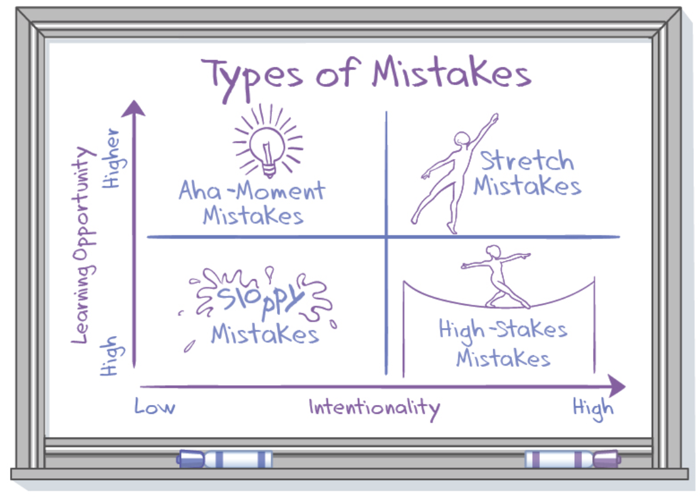

- 00 开篇词 从工程师到管理者，我的思考与实践.md.html
- 01 职场分身术：从给答案到做引导.md.html
- 02 Bug引发事故，该不该追究责任？.md.html
- 03 每个工程师都应该了解的：A_B测试.md.html
- 04 如何帮助团队成员成长.md.html
- 05 当我们给别人提意见时，要注意些什么？.md.html
- 06 每个工程师都应该了解的：聊聊幂等.md.html
- 07 当别人给我们提意见时，该如何应对？.md.html
- 08 说说硅谷公司中的一对一沟通.md.html
- 09 每个工程师都应该了解的：大数据时代的算法.md.html
- 10 项目延期了，作为负责人该怎么办？.md.html
- 11 管理和被管理：期望值差异.md.html
- 12 每个工程师都应该了解的：数据库知识.md.html
- 13 管理者在进行工作分配时，会考虑哪些问题？.md.html
- 14 硅谷人到底忙不忙？.md.html
- 15 每个工程师都应该了解的：系统拆分.md.html
- 16 技术人如何建立个人影响力_.md.html
- 17 管理者不用亲力亲为：关键是什么？.md.html
- 18 每个工程师都应该了解的：API 的设计和实现.md.html
- 19 硅谷面试：那些你应该知道的事儿.md.html
- 20 项目管理中的三个技巧.md.html
- 21 每个工程师都应该了解的：中美在支付技术和大环境下的差异.md.html
- 22 不要做微观的管理者.md.html
- 23 如何处理工作中的人际关系？.md.html
- 24 编程语言漫谈.md.html
- 25 兼容并包的领导方式.md.html
- 26 如何做自己的职场规划？.md.html
- 27 小议Java语言.md.html
- 28 如何激发团队人员的责任心.md.html
- 29 说说硅谷互联网公司的开发流程.md.html
- 30 编程马拉松.md.html
- 31 工程师、产品经理、数据工程师是如何一起工作的？.md.html
- 32 硅谷人如何做 Code Review.md.html
- 33 技术人的犯错成本.md.html
- 34 如何从错误中成长？.md.html
- 35 理解并建立自己的工作弹性.md.html
- 36 如何对更多的工作说“不”.md.html
- 尾声：成长不是顿悟，而是练习.md.html
- 捐赠
34 如何从错误中成长？
在上一篇文章“技术人的犯错成本”里，我和你聊了技术人可能会犯的各式各样的错误，也举了很多例子，说明了技术人犯错的成本。在竞争激烈的互联网时代，试错当然是好事，但了解错误成本，避免不应该犯的错误，最大可能地从错误中成长，才是我们应有的态度。
我之前看过一篇文章，其中把错误分成四类。
第一类：伸展错误（The stretch mistakes）
伸展错误是：当你尝试去做能力之外挑战的时候，因为自身能力或其他条件的束缚，做得不够好而犯的错。这种错误通常是因为我们主动尝试导致的，再小心也难以避免。不过，在此过程中，你获得学习的机会成本很高，一旦经历过一次，就可能有长足的进步。
比如在创业公司，大家有个创新性的想法需要去验证和实现，这时候谁都没经验，也没有前人的产品可以借鉴，也没有很懂的人给你指导，那怎么办？只能摸索前行，遇到问题，解决问题，犯错，然后纠正错误，所谓逢山开道，遇水搭桥，就是这个道理。当你抵达彼岸的时候，你会发现自己已经升级了，进入了另一个境界。
第二类：无知错误（The aha-moment mistakes）
无知错误是指：当你发现自己为什么错了的时候，你会发出“噢，原来是这样”的感慨。
这种错误一般是因为你不知道或忘记考虑某些特殊情况导致的错误，或者是你做了错误的假设。
初级程序员很容易犯这样的错误，比如忘记处理异常，没有考虑某些数值的边界值，没有进行安全校验等等，还有人因为没有仔细阅读产品文档，不知道产品设计已经改变了，也没有进行对应的调整。出现这种错误之前，你主观上根本没有意识到犯错的风险，还以为自己一直是对的，以至于出错后会有那样的反应。
这种错误一般不会反复出现，但要尽可能避免在不同类型的事情上犯同类型的错误。
第三类：粗心错误（The sloppy mistakes）
直译过来就是由于粗心大意导致的错误，很容易理解。这种错误与“无知错误”不同，是你明明知道怎么回事，但是因为不小心或者忘记了导致的错误。如果你是个粗心大意的人并且没有有意识地纠正自己，这种错误可能一犯再犯。
第四类：高风险错误（The high-stakes mistakes）
主动去做事情，但风险很高，是否会犯错不受自己的控制。比如你面临一个重要的选择，但在结果出来之前，你之前掌握的所有信息都无法告诉你哪个选择是绝对正确的，你只能去做自己认为是大概率的选择。
这种错误与第一类不同，经历过一次，下次遇到高风险的事件，依然可能犯错误，并且不知道会犯什么样的错。
以上我们介绍了四种错误类型，我在文章中放了一张图片，如图所示：第一类和第四类更具意识性，也就是主动去做事情，做事之前你就知道有可能出问题；第二类和第三类则属于下意识的错误，更加不可控。

从另一个角度来看，第一类和第二类错误都会让你学习到更多有价值的、可重用的信息，再有类似情况基本上不会犯重复错误；而第三类和第四类每次犯错后并不能学到太多可以复用的信息，以后有类似情况很可能再犯同样的错误。
了解了这些错误和错误分类，我们就可以有计划有意识地去应对这些错误，尽可能不犯那些对我们成长没有意义的错。当我们面临一个犯错和成长并存的机会时，我们也要知道如何去学习并避免犯同样的错误。
有哪些措施或者方法可以系统性的让我们避免那些无效错误，并从错误中成长呢？
1. 为了避免伸展错误，尽可能地提供一些培训机制。比如对新上任经理的培训，组织一些特定领域的学习班，系统地帮助大家积累岗位可能需要的技能和信息。让一个人担任某个全新的职务时，考虑导师机制，工作中有人结对给予实时指导，等等。
2. 为了避免无知错误，要做好信息的透明和共享。比如完善的文档和快捷的查询机制，任何技术或产品讨论以及达成的共识，要尽可能用邮件抄送到所有相关的人。大的改动可以举行一些会议确保所有人都得到最新的信息。一些常犯的错误或者容易被漏掉的信息可以整理成 Checklist 或手册等形式，让大家更方便地获取到有效信息。
3. 为了避免粗心错误，设置一定的复盘机制。如果是粗心大意造成的错误，要再三总结，反复问为什么，帮助加深记忆。另外还可以通过一些流程来确保低级的错误不会发生，比如细化开发流程，设置检查点，不断迭代和反馈，慢慢形成全面考虑问题的习惯。在不同的事情上，多给自己做一些 Checklist，做事的过程中对照进行，确保不会因为一时大意而有所疏漏。
4. 为了避免高风险错误，所有的决定尽可能都有一个备用方案。也就是除了 Plan A，还要有 Plan B。这样当事情没有按照预期去发展的时候，我们为错误付出的代价也会更少。
总结一下，今天我和你分享了“技术人如何从错误中成长”的话题，首先，我谈到了工作中常见的四种错误类型：伸展错误、无知错误、粗心错误以及高风险错误。前两种错误可以帮助我们迭代成长，后两种错误代价较高，我们要尽量避免一犯再犯。
其次，我讲到了如何去避免以上的错误，针对四种错误类型，要分别采取不同的方式对待。因地制宜、对症下药，让错误成为丰富的经验，为你的成长提供充足的养分。
你在工作中犯过错么，在这个过程中你又获得了什么的成长。欢迎在下面留言，我们一起成长，感谢你的收听，我们下期再见。
© 2019 - 2023 Liangliang Lee. Powered by gin and hexo-theme-book.